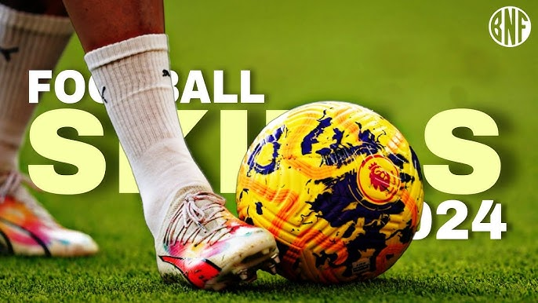

This channel contains a set of physical exercises and helps you develop physically,
in order to play without any exhaustion or fatigue.
It also helps you to always be active,
avoid diseases and injuries, and gives you good health
fitness
This channel specializes in teaching you football skills,
as it makes you very special on the field and a highly skilled player.
When you master it well, you will notice that it has become very easy and beautiful.
Football is not played with your strength or skills only, but rather depends on the mind,
and this is what always makes you a great player.

Football skills